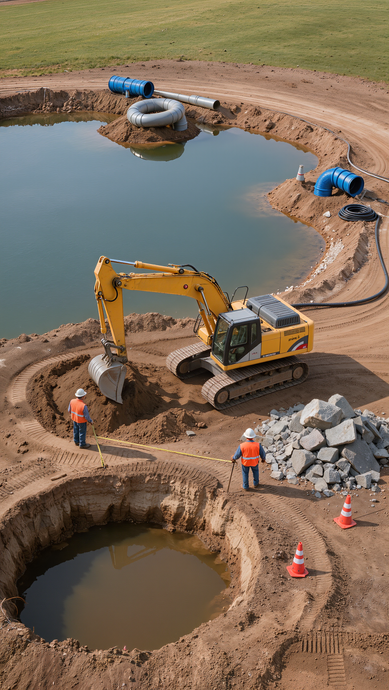
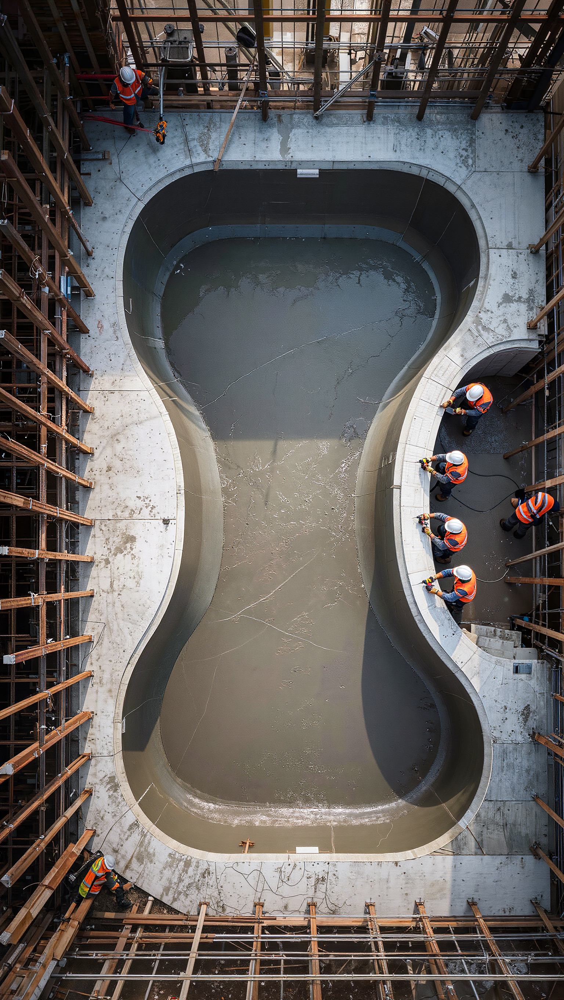
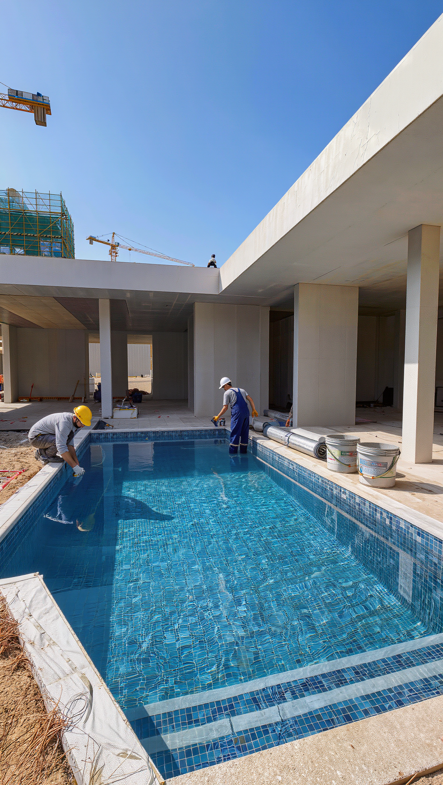

Piscine à débordement
La ligne d'eau se prolonge à l'infini, cadrée sur le paysage. Un bassin technique, pensé pour disparaître visuellement dans son terrain.
Piscines & bassins sur mesure
Chaque piscine LAME commence par un terrain vierge et un tracé pensé pour lui.
Terrassement, coque ou génie civil, réseaux techniques : le geste s'efface derrière la précision du métier.
Une piscine pensée pour durer, née pour être vécue de la première mise en eau aux étés qui suivent.
Demander un devis00 — La maison
LAME dessine des bassins qui n'ont pas l'air construits... plutôt révélés. Un métier d'ingénieurs et de tailleurs de pierre, où chaque détail (une margelle, un débordement, une teinte de liner) se décide en fonction d'un seul critère : la lumière qui viendra s'y poser.
01 — Prestations
La ligne d'eau se prolonge à l'infini, cadrée sur le paysage. Un bassin technique, pensé pour disparaître visuellement dans son terrain.
Une seule pièce composite, posée et mise en eau en quelques jours. La rapidité du chantier, sans concession sur la finition.
Un bassin affleurant au sol, silencieux, sans margelle apparente. Il redouble la lumière du jardin plutôt que de l'interrompre.
Pour les terrains contraints : nager sur place, se détendre à l'année, dans un volume pensé pour l'usage quotidien.
02 — Le métier

Étude de sol, implantation, réseaux enterrés. Tout ce qui ne se voit plus une fois le jardin refermé.

Coque, parois ou génie civil, étanchéité, margelles. La partie la plus longue et la moins photogénique.

Le moment que tout le monde attend. Traitement, équilibrage, et la première baignade généralement le jour-même.
03 — Matières
Calcaire et travertin, adoucis en bord de bassin, thermiquement stables sous le soleil.
Une dizaine de teintes, du gris anthracite au bleu profond, choisies pour leur reflet une fois l'eau posée.
Pâte de verre et grès cérame, posés en ligne d'eau pour souligner le contour du bassin.
Lames grand format, classe 4, pensées pour rester nu-pieds toute la saison.
04 — Avis
« Un chantier propre, tenu dans les délais annoncés ce qui n'était pas gagné vu la complexité du terrain en pente. Le résultat dépasse ce qu'on avait imaginé. »
« On voulait un bassin miroir sans être sûrs que ce soit réaliste sur notre terrain. L'équipe a été honnête sur les contraintes avant de s'engager, et a tenu parole. »
« Piscine coque posée en quatre jours comme promis. Le suivi après mise en eau (réglages, entretien) est aussi sérieux que le chantier lui-même. »
05 — Contact
Un premier échange, sans engagement, pour évaluer la faisabilité de votre projet même si vous n'avez encore que des questions.
Merci, votre demande est enregistrée. Nous revenons vers vous sous 48h.